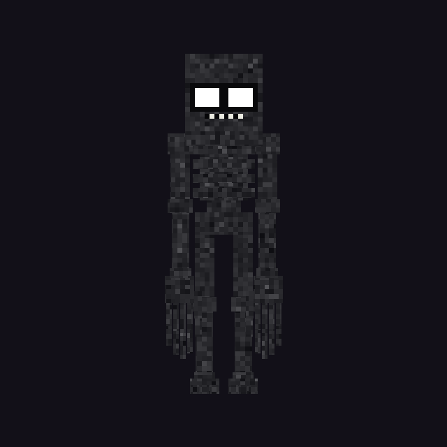
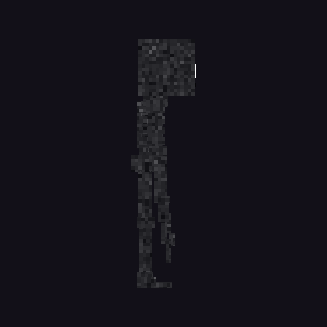
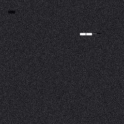
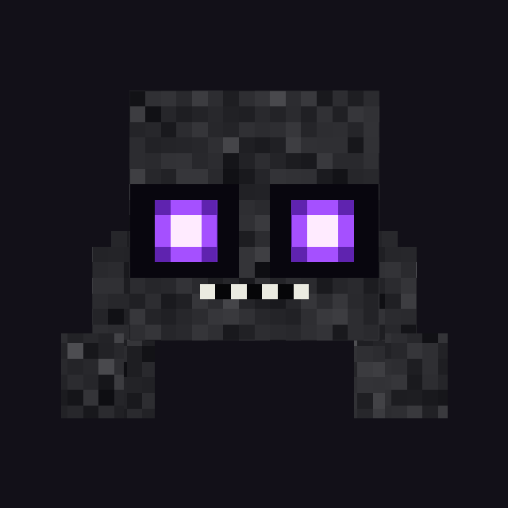
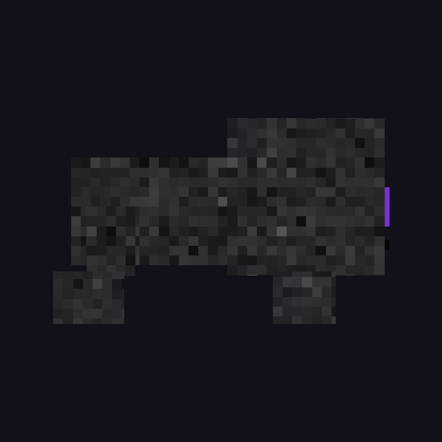
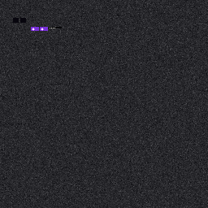
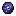
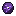

Entities
Two linked creatures: the adult that watches, and the babies that attack.
Gaze Snatcher

ID: gazesnatchers:gaze_snatcher
- Model — GeckoLib / Blockbench geo + animations.
- Day (wild) — passive; burns in sunlight.
- Night / sleep — chance to appear in front of a player who lies down (
spawnChance, default ~72%). - Gaze — stands still and stares. Fail to break attention soon enough (
ticksBeforeSteal, default 160 ticks ≈ 8s) and it steals an item. - After steal — may despawn (
despawnAfterSteal). - On death (wild) — splits into 2–4 babies; one may inherit the stolen item.
- Taming — right-click with a Gaze Binding Charm: follows owner, defends in combat, sits on empty-hand click; no steal / no sleep block / no sun burn / no baby split.
- Loot — 0–2 Gaze Shards when killed by a player.
Summon: /summon gazesnatchers:gaze_snatcher
gaze_snatcher.geo.json

textures/entity/gaze_snatcher.png)Baby Gaze Snatcher

ID: gazesnatchers:baby_gaze_snatcher
- Always hostile, faster than the adult.
- Mostly spawn from the adult’s death split (2–4 per config).
- Drop: 1–3 Gaze Shards.
- The “carrier” baby may return the stolen item on death (config-dependent).
- GeckoLib model: large head, short body, four stubby legs, glowing eyes.
- Cannot be tamed (Binding Charm works on adults only).
Summon: /summon gazesnatchers:baby_gaze_snatcher
baby_gaze_snatcher.geo.json

textures/entity/baby_gaze_snatcher.png)Spawn eggs

Adult spawn egg
Creative tab

Baby spawn egg
Creative tab
See also: Gameplay & config · Items